#1
โปสเตอร์อินไซต์: ตัวเลขของเมืองแสดงไม่ครบ
แก้แล้วaudiencePoster
- สาเหตุ
- C: ตัวเลข
$share ยอมหดตามชื่อเมือง ชื่อ "เทศบาลนครพิษณุโลก" ยาว เลยเหลือ "2…" และแถวแรกก็เหลือ "4…"
- วิธีแก้
- ตัวเลข % ห้ามหด ให้ชื่อเมืองหดหรือตัดเป็น … แทน (แก้ทั้งเมืองหลัก ช่วงอายุ และเพศ)
{ "slot": "$share", "size": 15.5, "weight": 800, "maxLines": 1, "shrink": 0 }
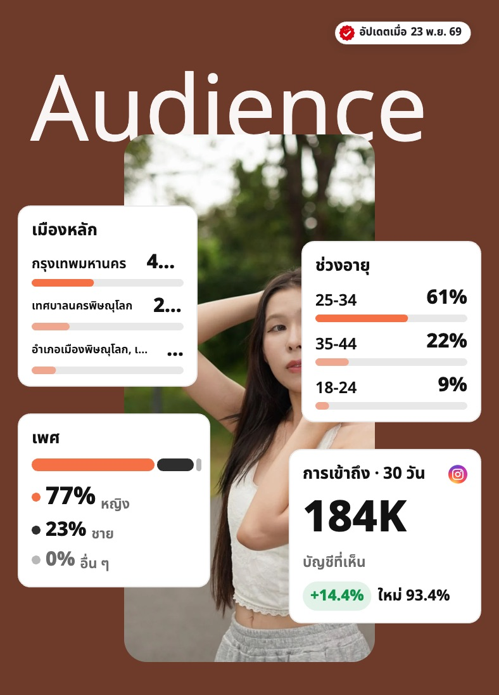
ก่อนตัวเลขเหลือ "4…" "2…" "…"
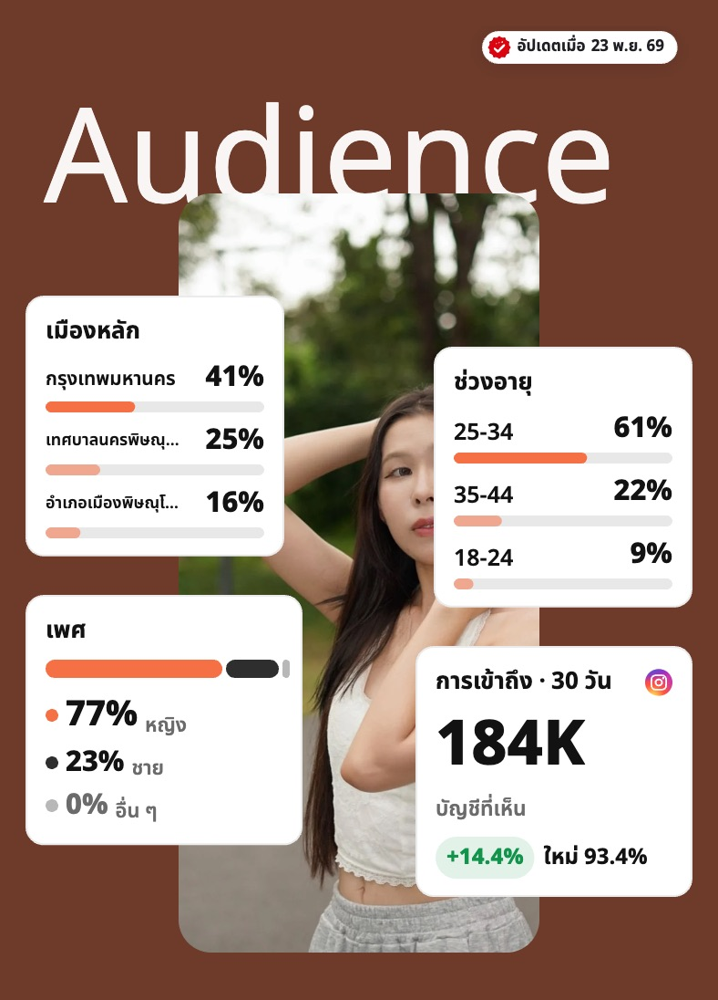
หลัง41% · 25% · 16% ครบทุกแถว
#2
ช่องทางผ้าปิกนิก: ขยายหัวข้อแล้วตัวอักษรมุดใต้การ์ด
แก้แล้วsocialGingham
- สาเหตุ
- D: แถบ
head สูง h: 31 ตายตัว ตัวอักษรที่ขยายแล้วสูงเกินแถบ เลยล้นลงไปอยู่ใต้การ์ด Facebook/ผู้ติดตาม
- วิธีแก้
- ให้แถบหัวข้อสูงตามตัวอักษรและห้ามหด การ์ดจึงถูกดันลงแทน ที่ขนาด M แถบยังสูง 31 เท่าเดิม (ภาพตรงกับของเดิม 0 px) เส้นสองข้างหัวข้ออยู่ระดับเดิม ถ้าที่ไม่พอ ให้แถบ "ข้อมูลจาก…" ท้ายใบหดก่อน
"id": "head", "h": 31, "minH": 31, "shrink": 0, "pad": [3, 0, -5.24, 0],
children: { "type": "col", "alignSelf": "stretch", "justify": "center", "pad": [0,0,5.24,0], children: [เส้น] }, หัวข้อ, …
"id": "footer", "h": 21.5, "shrink": 4
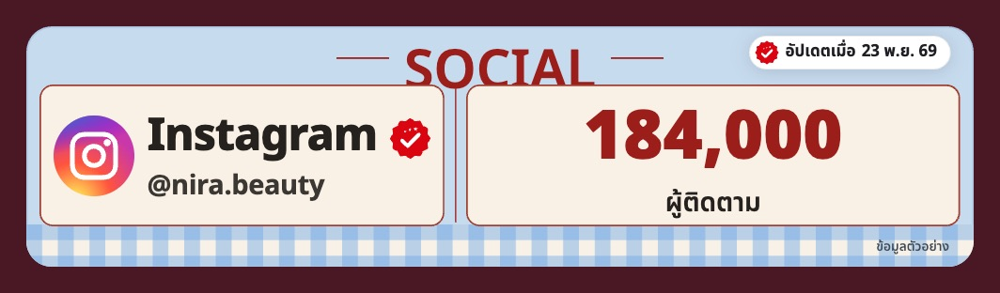
ก่อน"SOCIAL" ขนาด L มุดใต้การ์ด
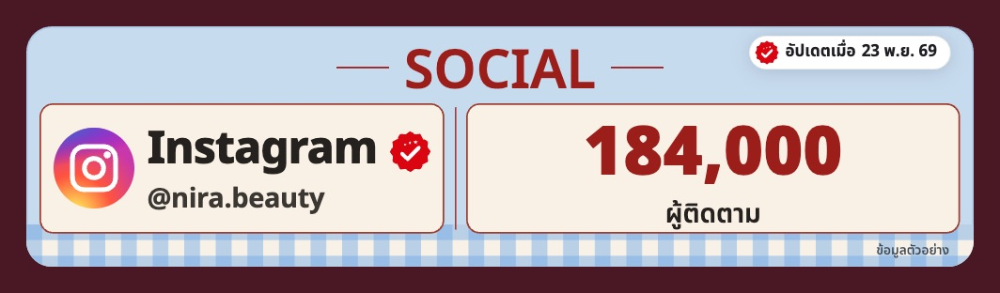
หลังขนาด L เห็นครบ การ์ดเลื่อนลง
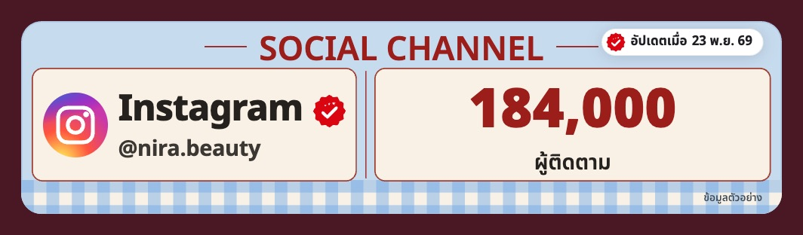
M ตรงกับของเดิม 0 px
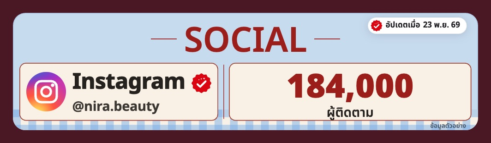
XL หัวข้อชัด การ์ดเตี้ยลง
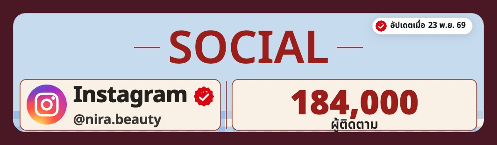
XXL หัวข้อชัด แต่การ์ดแน่น (ดูข้อจำกัด)
เพิ่ม: พิมพ์หัวข้อยาวแล้วตัวอักษรไม่ย่อ
- เดิม
- ถ้าข้อความยาวเกินช่อง ตัวอักษรจะย่อลงได้ถึง 11 (
shrinkTo)
- ตอนนี้
- ตัวอักษรคงขนาดที่เลือก ข้อความกินช่องจนเต็ม (กว้าง 252 ช่องเดิมของดีไซน์ ไม่ชนป้าย "อัปเดตเมื่อ") แล้วตัดท้ายเป็น …
"id": "title", "size": 22, "maxLines": 1, "shrinkTo": 11, "maxW": 252
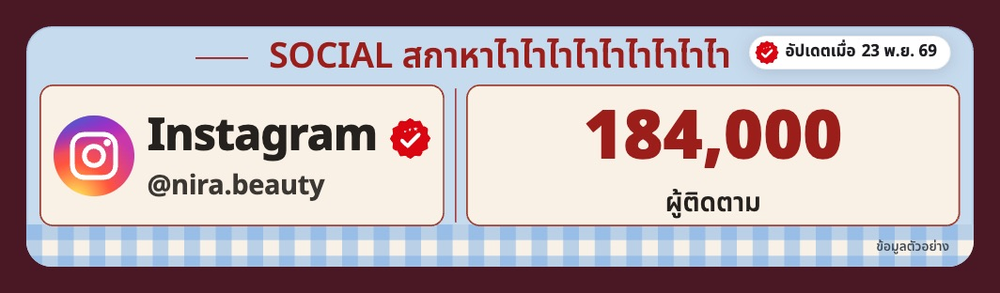
ก่อนM · พิมพ์ยาวแล้วตัวเล็กลง
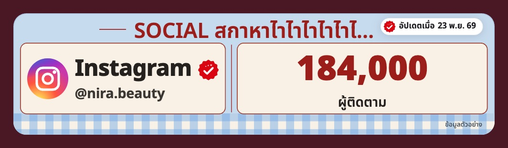
หลังM · ขนาดเดิม เต็มช่องแล้ว …
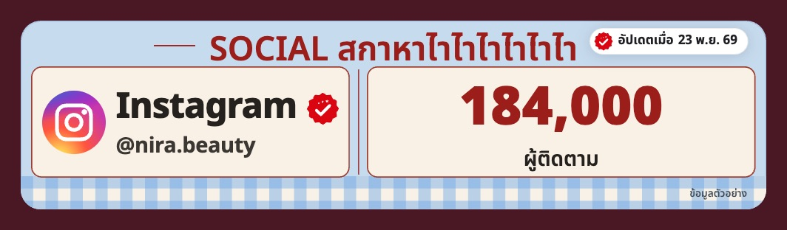
ก่อนL · ย่อจนดูเหมือน M
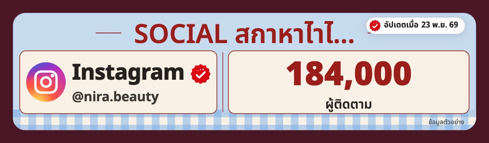
หลังL · ใหญ่ตามที่เลือก แล้ว …
#3
เรทรับงาน ชุดลายผ้า: เลือกสีเข้มแล้ว title กลืนพื้น
แก้แล้วkitRateGingham · สี #1C2A6B
- สาเหตุ
- A: title
ink + on: light อยู่บนการ์ดขาว rect#card fill: white - วิธีแก้
- ให้ title ใช้หมึกเข้มสีเดียวกับเนื้อหาในการ์ดขาว ภาพตอนไม่ได้เลือกสียังตรงกับของเดิม 0 px
"id": "title", "color": "ink", "on": "light" → "color": "#141417"
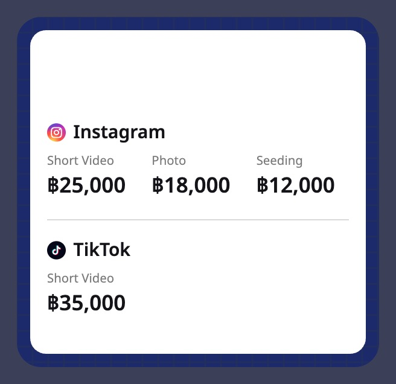
ก่อน"เรทรับงาน" หาย
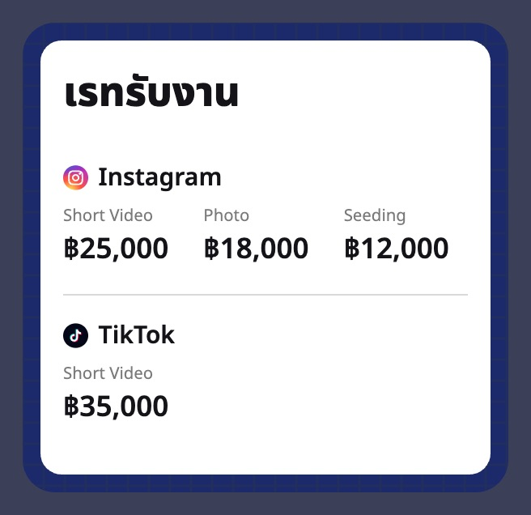
หลังอ่านออก
#6
สถิติผู้ชม: เลือกสีเข้มแล้วคำว่า "ผู้ชม" กลืนพื้น
แก้แล้วscrapStats · สี #2A1A14
- สาเหตุ
- B: ป้าย "ผู้ชม" เป็นกล่อง
bg2 (เปลี่ยนสีตามสีวิดเจ็ต) แต่ตัวหนังสือเป็น #141414 ตายตัว ป้าย ER 3 ช่องข้างล่างก็เป็นแบบเดียวกัน - วิธีแก้
- ตัวหนังสือบนกล่อง
bg2 เปลี่ยนเป็น ink ให้เปลี่ยนสีตามกล่อง ตอนไม่ได้เลือกสี ink ของแผ่นสว่างแทบเท่ากับ #141414 (0 px)
"id": "text2", "text": "ผู้ชม", "color": "#141414" → "color": "ink" (+ "$engagement", "{name} · ER")
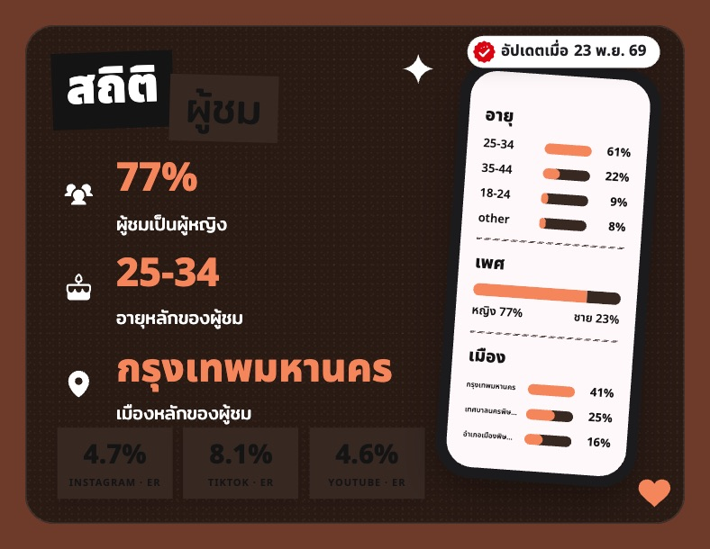
ก่อน"ผู้ชม" และ ER จมกล่อง
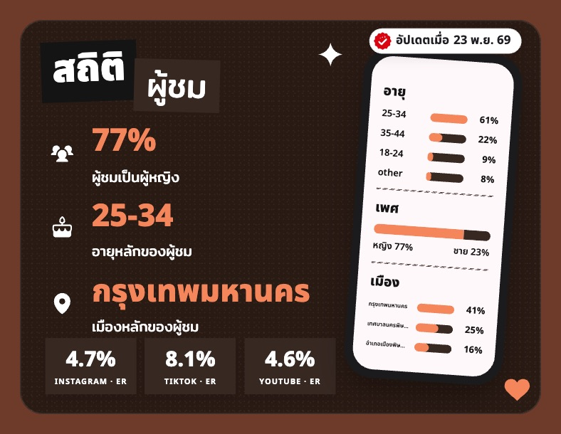
หลังอ่านออกทั้งหมด